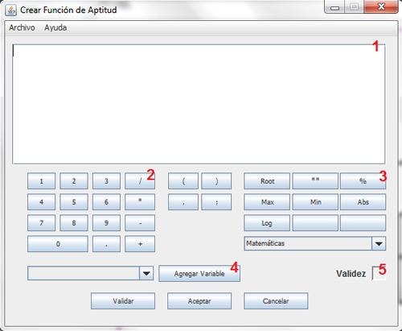

La función de aptitud es utilizada para calcular la aptitud de los cromosomas de cada generación, esta función debe retornar un double o el GAL_Parser arrojará un error.
Al pisar sobre el botón "Definir Función de Aptitud" (Sin las comillas) se abre una ventana como la siguiente:
Cada número es definido a continuación como:
Espacio de Código
Calculadora
Botones Complejos
Agregar Variable
Validar
La función de aptitud no se puede definir hasta que el cromosoma sea definido.
Nota. Si se realizan cambios sobre el cromosoma, se debe volver a validar el código.